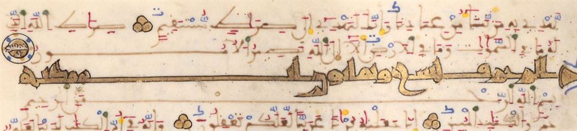
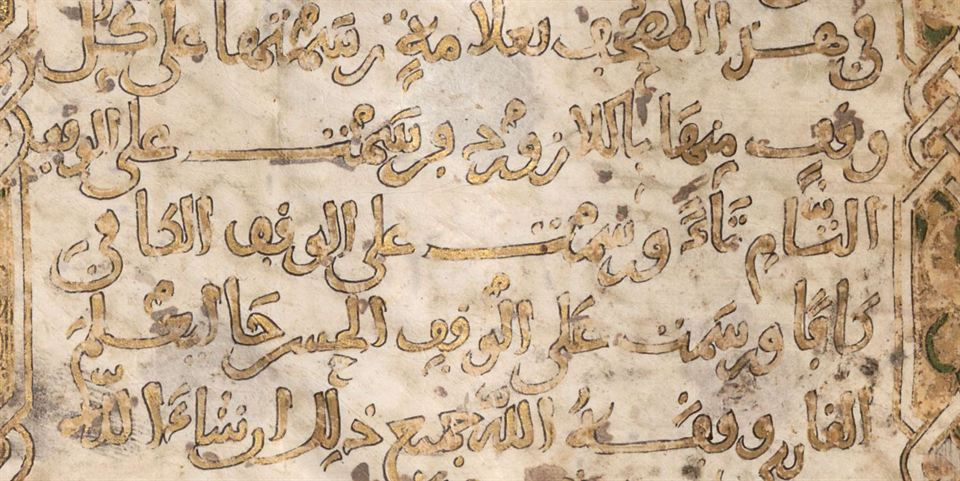
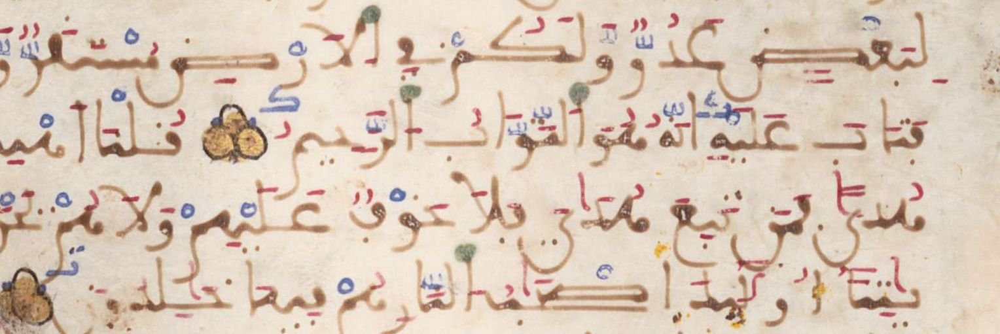

Dated Qur’ans with a known copyist or patron from the Almoravid period in the Maghrib and al-Andalus: the ones that have come down to us, and the ones that can be browsed online today.
Very few dated Qur’ans survive from the Almoravid period: five Qur’ans and volumes on Umberto Bongianino’s list of dated Maghribi Qur’ans, all square or nearly square, and most small enough to be held in one hand. Only the Almería Qur’an, which names its copyist and its place, meets the criteria. The clearest today is the Munich Qur’an dated 533 AH, fully digitised, with pausal marks in lapis blue following the system of al-Dani.
«فتاب عليه إنه هو التواب الرحيم», “and He turned to him; He is the Relenting, the Merciful”: Surat al-Baqara in the Munich Qur’an dated 533 AH / 1138–1139 CE. The blue kāf after the end of the verse marks a “sufficient” pause. Bavarian State Library, Cod.arab. 4.
Overview
What do we know?
This guide lists 5 Qur’ans in three groups: those that survive and meet the criteria, those recorded in the sources and since lost, and those on the edge of the criteria.
1
surviving Qur’an meeting the criteria
0
Qur’ans recorded in the sources, with no known trace today
4
Qur’ans on the edge of the criteria, included for comparison
1
Qur’an whose surviving parts can be browsed in full at the source
Criteria
A Qur’an enters the first list when three things hold:
The date of copying is stated explicitly in its colophon or endowment deed, not inferred from its style.
Its owner is known: the copyist, if named, or the person for whom or for whose library it was made.
It was demonstrably copied in the Almoravid lands of the Maghrib or al-Andalus.
The Almoravid state arose in the Sahara around 448 AH / 1056 CE, then took the Maghrib and crossed into al-Andalus, taking Granada in Rajab 483 AH / 1090 CE, Seville and Almería in 484 AH / 1091 CE and Valencia in 495 AH / 1102 CE. It ended when the Almohads entered Marrakesh in 541 AH / 1147 CE.
What the badges mean
Each card carries three badges: does the Qur’an survive? Is it complete? Can it be browsed online?
The bars are the reigns of the main rulers and the markers are the Qur’ans. A filled marker is a surviving Qur’an, a hollow one a lost Qur’an, and a horizontal line the span within which an undated Qur’an falls.
Click a marker to jump to its card. On a phone, swipe the timeline sideways.
The Qur’ans
Cards and samples
The samples are close-ups of the writing itself, not of the illumination or the opening pages. Click a sample to enlarge it; you can zoom and pan, and follow a link to the full page at the library that holds the manuscript.
Ahmad b. Ghalinduh, as Bongianino reads the name (Aḥmad b. Ghalinduh)
Place
Almería, held by the Almoravids from 484 AH / 1091 CE until the Castilians took it in 542 AH / 1147 CE
Today
Madrid, Biblioteca Nacional de España, RES/272
Format
Thin paper; 82 × 71 mm; 17 lines; one volume
A tiny Qur’an no bigger than the palm of a hand, with sura headings in gilded Kufic. According to Umberto Bongianino it is the oldest known Qur’an written on paper in the Islamic West, at a time when Qur’ans were written on parchment.
Its colophon is in gold, in Maghribi thuluth, and has been moved to the front of the volume (folio 1r). Its text, as Bongianino published it in transliteration: “God Almighty has spoken the truth, there is no god but He; the noble messengers have delivered the message, and we bear witness to what our Lord and Master has said. It was completed in the middle of Jumada I of the year five hundred and thirty-four at the hands of Ahmad b. Ghalinduh in Almería; may God have mercy on its writer and on whoever had a part in it, and on all Muslims. Amen, amen, Lord of the worlds, and may God bless Muhammad and his family.”
«تمّ الجزء الثامن بحمد الله وعونه... وذلك في شهر جمادى الأولى من سنة ثلاث وثمانين وأربع مائة. رحم الله كاتبه وكاسبه وقارئه، آمين آمين», “The eighth volume was completed with the praise and help of God... in the month of Jumada I of the year 483. May God have mercy on its writer, its buyer and its reader. Amen, amen.”
Today
Uppsala, University Library, O. Bj. 48
Format
Parchment; 17 × 14.5 cm after trimming; 11 lines; the last of eight volumes
It is written in a fairly large Maghribi mabsūṭ, with many extensions and free-flowing tails, and is one of the oldest dated witnesses for sukūn and shadda drawn in lapis blue instead of red. The colophon’s prayer for its “kāsib”, its buyer, suggests that it was copied for sale rather than for a particular person.
Its date is explicit, but the colophon names no copyist, owner or place. It was written in Jumada I 483 AH, before the Almoravids entered Granada in Rajab of the same year, so we cannot tell whether it was copied in their lands or in the Taifa kingdoms.
Bongianino included it in his list of dated Maghribi Qur’ans after seeing images of it sent to him by Professor ʿAbd Allah al-Munif. The copyist’s nisba points to Badajoz, which the Almoravids took in 487 AH / 1094 CE.
The leaf with the colophon seems to be lost, so the date can no longer be checked, and the place of copying is unknown.
No samples here. The manuscript is not digitised, and we found no published image of it. The drawing shows the layout of the page: number of lines not published.
Zakariyya b. Muhammad b. Zakariyya al-Qurashi: «مما ذهّبه وسفّره», “among what he illuminated and bound”
Copyist
Not named
Owner
«تهمَّم بإقامة هذا المصحف لنفسه ثم لابنه من بعده», “he took care to have this Qur’an made for himself, then for his son after him”; his name was later scraped from the colophon
Place
Not stated; probably Andalusi
Today
Munich, Bavarian State Library, Cod.arab. 4, from the books of the orientalist Johann Albrecht Widmanstetter (d. 1557 CE)
Format
Parchment; 130 folios; 17.3 × 16 cm; 23 lines; two quires missing between folios 26 and 27 (al-Maʾida 12 – al-Anʿam 77)
Its date was long disputed: it was assigned to the early fourteenth century CE, then to the thirteenth, then to the twelfth or thirteenth, and the library catalogue placed it around the eleventh. In 2020 Umberto Bongianino read its colophon and found in it the year 533 AH and the name of the illuminator. Its present binding is later, of the fifteenth century CE.
At the beginning is a note in gold in which the writer says that he has marked the places of pause throughout the Qur’an with small letters in lapis blue, following al-Dani’s al-Muktafa: tāʾ for a complete pause, kāf for a sufficient one and ḥāʾ for a good one. At the end are the counts of the verses, letters and words of the Qur’an, also taken from al-Dani, from his al-Bayan fi ʿadd ay al-Qurʾan.
Its date is explicit, but the name it gives is the illuminator’s, not the copyist’s; the owner’s name has been scraped off, and the place of copying is not stated. Even so, it is the clearest Almoravid Qur’an that can be browsed in full today.
The colophon in two gilded panels (folios 127v–128r)
تهمَّم بإقامة هذا المصحف لنفسه ثم لابنه من بعده [موضع مكشوط]... وفي الإطار بالكوفي: بسم الله الرحمن الرحيم، مما ذهّبه وسفّره زكريا بن محمد بن زكريا القرشي، وكان الفراغ منه سنة ثلاث وثلاثين وخمس مائة
He took care to have this Qur’an made for himself, then for his son after him [erased]... And in the frame, in Kufic: In the name of God, the Merciful, the Compassionate; among what Zakariyya b. Muhammad b. Zakariyya al-Qurashi illuminated and bound; it was finished in the year five hundred and thirty-three.
The centre is in Maghribi thuluth on a ground of gold leaf, and we checked it against the image. The Kufic frame follows Bongianino’s reading, since its letters are worn in the image. Completion in 533 AH corresponds to 1138–1139 CE.
The journey of the manuscript to Munich
533 AH / 1138–1139 CEZakariyya al-Qurashi completed its illumination and binding
15th century CEGiven its present binding, perhaps in Tunis
16th century CEIn the library of the orientalist Widmanstetter
Since 1558 CEIn the library of the Duke of Bavaria, later the Bavarian State Library
Close-ups of the script (4)Click to enlarge →
al-Baqara 36–40 · Cod.arab. 4, fol. 5v

End of al-Shura and start of al-Zukhruf · Cod.arab. 4, fol. 100v

The note on the pausal marks · Cod.arab. 4, fol. 2rThe colophon: “he took care to have this Qur’an made” · Cod.arab. 4, fol. 128r
Cordoba, held by the Almoravids until Ibn Hamdin rose against them in 539 AH / 1144–1145 CE
Today
Istanbul, Istanbul University Library, A 6755
Format
A single small square volume; 18.2 × 17.8 cm
Bongianino published an image of its Fatiha and the start of Surat al-Baqara (folios 3v–4r). It is one of the small square Qur’ans that were common in al-Andalus and the Maghrib in the sixth century AH.
Its date and place are stated, but it names neither a copyist nor an owner.
al-Fatiha and the start of al-Baqara · Istanbul University A 6755, after Bongianino 2020, fig. 9 · AI-enhanced
Sizes and ruling
The pages at one scale
The pages are drawn in their true proportions and at one scale, each with its number of lines.
The Cordoba Qur’an (Istanbul)17.8 × 18.2 cm · lines ?
The Munich Qur’an of 533 AH16 × 17.3 cm · 23 lines
The Uppsala Qur’an of 483 AH14.5 × 17 cm · 11 lines
Al-Batalyawsi’s Qur’an (Medina)15 × 15 cm · lines ?
The Almería Qur’an (Madrid)7.1 × 8.2 cm · 17 lines
A dashed frame marks unpublished dimensions, drawn only in approximate proportion. Swipe the rows sideways to see all the Qur’ans.
Anatomy of the script
How to read the vocalisation of the Munich Qur’an
Four lines of folio 5v (al-Baqara 36–39). The pen is very fine: the page holds 23 lines and is only 17.3 cm high. Besides the black ink of the text, the scribe uses four colours to vocalise and mark it, so that his work comes close to the illuminator’s.

Swipe the image sideways to see the full lines.
1
Blue kāf: a sufficient pauseAfter «إنه هو التواب الرحيم» (al-Baqara 37) a small kāf in lapis blue marks a “sufficient” pause (waqf kāfī), as the scribe explains in the gilded note at the start of the Qur’an.
2
Blue tāʾ: a complete pauseAfter «هم فيها خالدون» (al-Baqara 39) a small tāʾ in lapis blue marks a “complete” pause (waqf tāmm), because the next verse begins a new address to the Children of Israel.
3
Verse separatorThree gilded dots outlined in black at the end of every verse.
4
Vowels in redThe fatḥa, kasra and ḍamma are fine red strokes, as in «فتاب».
5
Shadda in lapis blueThe shadda is drawn in lapis blue rather than red, as on the nūn of «إنّه». Ibn Wathiq of Seville (d. 654 AH) mentions this practice as an alternative to red.
6
Sukūn in lapis blueA small blue circle above the vowelless mīm of «هُمْ».
7
Waṣla as a green dotA green dot on the alif of «التوّاب» marks the elided hamza (hamzat al-waṣl).
8
Hamza as a yellow dotA yellow dot marks the place of the hamza.
9
A ṣād without its loopThe scribe does not give the ṣād its oval loop but draws two parallel extended strokes, as in «أصحاب». Bongianino describes this as the most striking feature of this fine script.
Sources
References and image rights
Every statement on the cards comes from one of these sources. The readings of the centre of the Munich colophon and of its pausal marks are our own, from the images.
Umberto Bongianino, “A Rediscovered Almoravid Qurʾān in the Bavarian State Library, Munich (Cod. arab. 4)”, Journal of Islamic Manuscripts 11/3 (2020), 263–291, open access (CC BY 4.0): the reading of the colophon and notes of the Munich Qur’an; its appendix lists the dated Maghribi Qur’ans.
Umberto Bongianino, “Quelques remarques sur l’origine des écritures coraniques arrondies en al-Andalus (Ve/XIe–VIe/XIIe siècles)”, Al-Qanṭara 38/2 (2017), 153–187: the Almería Qur’an and the text of its colophon, and the Uppsala Qur’an and the text of its colophon.
Bavarian State Library, Munich, Cod.arab. 4: its record in the Bavarian union catalogue (BV035403092), the colour digitised copy bsb00117587, and an older black-and-white copy in the digital library (bsb00107242).
Joseph Aumer, Die arabischen Handschriften der K. Hof- und Staatsbibliothek in Muenchen, 1866, p. 2: the first description of the Munich Qur’an.
Carl J. Tornberg, Codices arabici, persici et turcici Bibliothecae Regiae Universitatis Upsaliensis, 1849, pp. 245–246: the Uppsala Qur’an.
Limits of this guide
To list the dated Qur’ans we relied on Bongianino’s list (2020), the fullest published. He excludes two Qur’ans wrongly dated to the Almoravid period: Istanbul University A 6756, dated 500 AH, which is a nineteenth-century copy of an older model, and Escorial 1397, whose date was read as 500 AH but is in fact 701 AH, in Malaga. The oldest known dated square Qur’an was copied by al-Husayn b. Ishaq in Ramadan 470 AH in Cordoba for the vizier ʿAbd al-Malik b. Siraj, that is, under the Taifa kings before the Almoravids; its present location is unknown. We found no published digitised copies of the Qur’ans in Madrid, Istanbul, Medina and Uppsala.
The images of the Munich Qur’an are from the Bavarian State Library (MDZ digital library, Cod.arab. 4) and are in the public domain (Public Domain Mark). The samples are close-up details of its pages. Some images are reproduced from published studies, mostly at low resolution, to introduce Qur’ans that have not been digitised; the source of each image is given under it, and the rights belong to their owners and to the libraries that hold the manuscripts. Weak images were enhanced with AI (Real-ESRGAN, blended with a plain enlargement so that the letter forms do not change), and each enhanced image is marked under it.